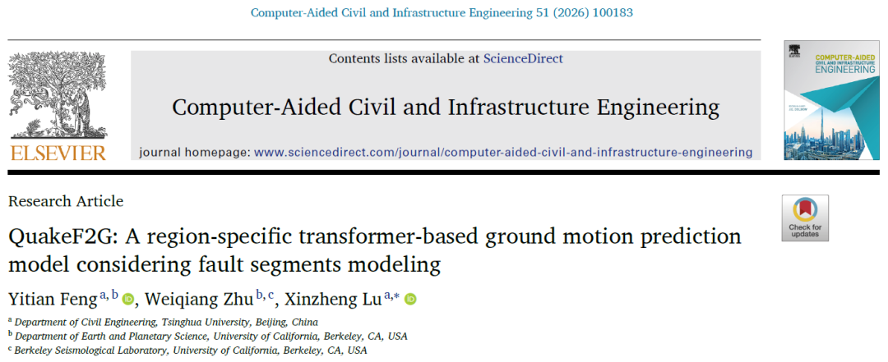
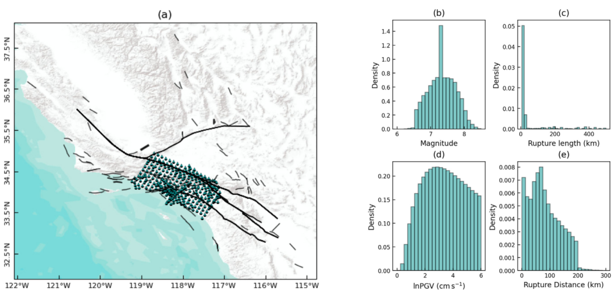
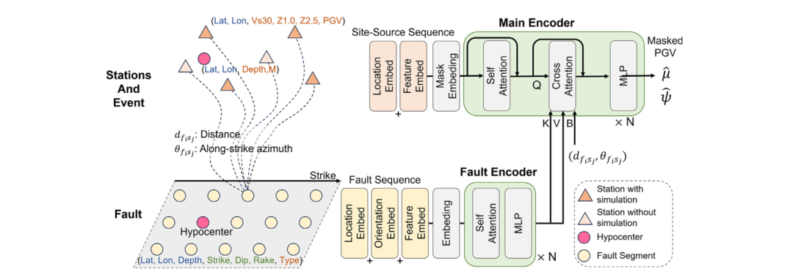
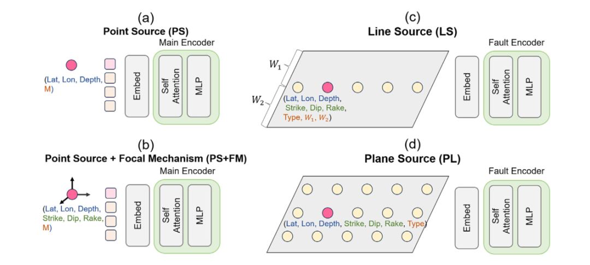
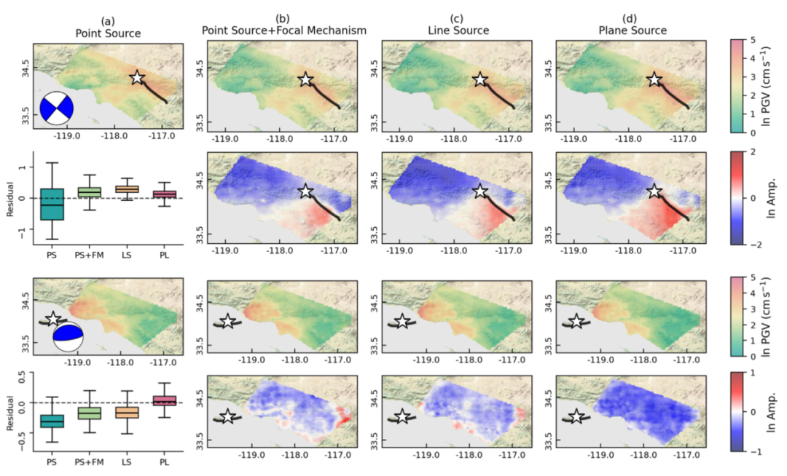
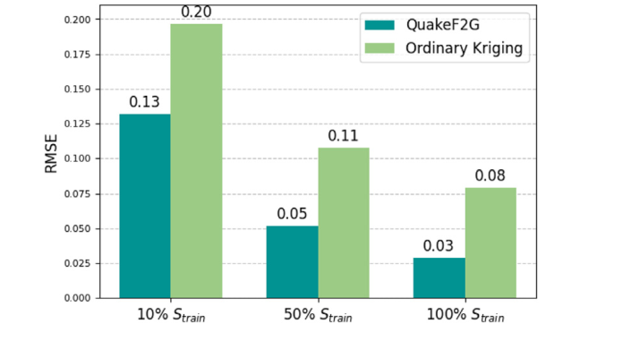

把断层“拆成 Token”交给 Transformer｜新开源论文：QuakeF2G 近断层地震动预测模型

https://doi.org/10.1016/j.cacaie.2026.100183
0 太长不看版
近断层地震动预测有一个很现实的矛盾：越靠近断层，破裂方向、有限断层几何和盆地效应越重要；但越精细地描述这些物理过程，计算成本通常也越高。
为此，我们提出 QuakeF2G：在此前 QuakeFormer 的基础上，不再把大地震简单表示为一个“点”，而是把有限断层离散成一组 fault-segment tokens，再通过 Transformer 的自注意力和交叉注意力机制，将断层几何、震源信息、场地条件以及可选的站点观测统一融合，用于概率型 PGV 预测。
模型基于南加州 CyberShake 约 62.6 万个地震场景训练。研究表明：显式引入有限断层几何后，相比点源方法，测试集 RMSE 降低约 36%；在空间插值实验中，QuakeF2G 也优于 Ordinary Kriging。
此外，本研究的论文为开放获取，代码公开。文末附代码、数据和论文链接，便于进一步检查、复现和扩展。

图1 CyberShake 数据集中的站点、断层与数据分布（原文 Fig. 1）
1 为什么近断层地震动特别难预测？
远离断层时，很多地震动指标可以在一定程度上用“震级 + 距离 + 场地条件”来描述。但到了近断层区域，问题会明显复杂起来。破裂从震源点向外传播时，不同断层段释放的能量可能在某些方向上叠加，形成显著的破裂方向性（rupture directivity）；同时，盆地结构、传播路径和场地条件还会进一步改变地震动空间分布。
传统经验型地震动模型（GMPE/GMM）计算很快，但通常需要用有限数量的参数概括断层几何；物理波动传播模拟可以更直接地描述三维速度结构和破裂过程，但计算和存储成本很高。
因此，这项研究希望回答的问题是：能否把高保真物理模拟中学到的区域规律压缩到一个轻量模型中，同时把有限断层几何特征显式地保留下来？
2 核心思路：把有限断层变成 Transformer 能处理的 Token
QuakeF2G 的关键变化，是不再把震源只压缩为震中位置和震级，而是把复杂断层离散为一组长度可变的 token。每个断层段携带位置（纬度、经度、深度）、方向（走向、倾角、滑动角）和类别等信息；震源点则作为一个特殊 token，帮助模型识别破裂起始位置。
这些 fault-segment tokens 首先进入专门的 Fault Encoder，通过多尺度位置编码、RoPE 和自注意力学习断层内部的空间关系。随后，Fault Encoder 输出的断层表示与站点—震源序列在 Main Encoder 中通过 cross-attention 融合。

图2 QuakeF2G 模型架构：Fault Encoder + geometry-aware cross-attention（原文 Fig. 2）
这里还有一个很重要的细节：对于每一个“断层段—站点”组合，模型预先计算断层段到站点的距离以及沿走向方位角，并把这些几何量转化为 cross-attention 的可学习偏置。也就是说，模型不仅知道“有哪些断层段”，还显式知道“这个断层段相对这个站点在哪里”。
最终，模型输出的不是一个单一 PGV 数值，而是每个站点 ln(PGV) 的概率分布参数，从而可以用于概率地震危险性分析。
3 同一个框架，适配四种不同精细程度的震源信息
论文没有假设任何时候都能立刻得到完整的有限断层模型，而是设计了四种逐步复杂的震源表示。这个设计很贴近真实的震后信息获取过程：越早得到的信息越简单，随着时间推移，震源机制和有限断层几何才会逐步完善。
Point Source（PS）只使用震源位置和震级；PS + Focal Mechanism（PS+FM）进一步加入走向、倾角和滑动角；Line Source（LS）用线段近似破裂范围；Plane Source（PL）则把断层离散为三维断层段，可以表达更复杂、非平面或多段断层几何。

图3 四种不同精细程度的震源表示：PS、PS+FM、LS 和 PL（原文 Fig. 3）
4 有限断层几何信息确实可以提升精度
消融实验给出了一个很清晰的结果。对于 rupture distance ≤ 100 km 的测试数据，点源模型 PS 的总 RMSE 为 0.379；加入震源机制后降至 0.359；使用 Line Source 后进一步降至 0.246；完整 Plane Source 为 0.243。也就是说，从点源到有限断层表示后，RMSE 总体降低约 36%。

图4 不同震源表示对两个 CyberShake 场景预测结果的影响（原文 Fig. 4）
因此，把有限断层及其与站点的几何关系显式加入模型，比简单点源表示更有效；至于更细致的断层面表达能够带来多大进一步收益，还需要更丰富的破裂运动学数据来验证。
5 2019 Ridgecrest Mw 7.1 地震案例
论文进一步将 QuakeF2G 应用于 2019 年 Mw 7.1 Ridgecrest 地震。对比了 QuakeF2G 的 Point Source、Plane Source 与 ASK14、ASK14+BS13 等经验模型。


图5 2019 Mw 7.1 Ridgecrest 地震的预测与残差对比（原文 Fig. 10）
在本文采用的台站和对比设置下，QuakeF2G 的 PS 和 PL 残差箱线图中位数更接近零、离散程度也更小；同时，加入有限断层信息后的 PL 相比 PS 进一步改善。这说明在这个真实地震案例中，显式考虑断层几何对地震动空间预测是有帮助的。
6 不仅可以预测，还可以做 PSHA 和空间插值
QuakeF2G 的另一个特点，是同一套 masked Transformer 思路可以在不同信息条件下工作。没有站点观测时，它是纯预测模型；如果部分站点已有 PGV 观测或模拟结果，这些信息可以作为可见 token 输入，模型对其余站点进行条件预测。
在 PSHA 示例中，论文在 NVIDIA RTX 6000 GPU 上计算一条 hazard curve 的时间约为 32 min，而 CyberShake 模拟流程对应的计算时间约为 1592 h。神经网络训练完成后，可以把大规模模拟数据库中的区域规律转化为快速重复调用的代理模型。
空间插值实验也很有意思：当 QuakeF2G 只使用 50% 的训练站点时，RMSE 约为 0.05；Ordinary Kriging 即使使用 100% 的训练站点，RMSE 仍约为 0.08。论文在所测试的 10%、50% 和 100% 采样密度下，QuakeF2G在相同的测试台站中均取得更低的 RMSE。

图6 QuakeF2G 与 Ordinary Kriging 的空间插值 RMSE 对比（原文 Fig. 12）
7 开放资源
本研究提供了三层开放资源：论文为 Open Access（CC BY-NC）；项目代码公开在 GitHub；训练所用的 CyberShake 数据及相关站点、场地和断层几何信息可通过 SCEC 获取。
扫码访问 QuakeF2G GitHub 仓库
--End---
---End---
建筑结构生成式智能设计软件：
相关研究
学术报告视频
专著
人工智能与机器学习
---结构智能设计
建筑平面您说咋改就咋改，剩下的都交给AI了｜新论文：ChatHouseDiffusion：提示词引导的建筑平面图生成与编辑方法
三大生成式AI + 三大优化算法，谁是BRB加固设计的最优组合？| 新论文：钢筋混凝土框架结构BRB智能加固设计方法对比分析
---其他土木工程领域人工智能研究
城市灾害模拟与韧性城市
高性能结构与防倒塌
新论文：抗震&防连续倒塌：一种新型构造措施
长按识别二维码，关注我们的科研动态